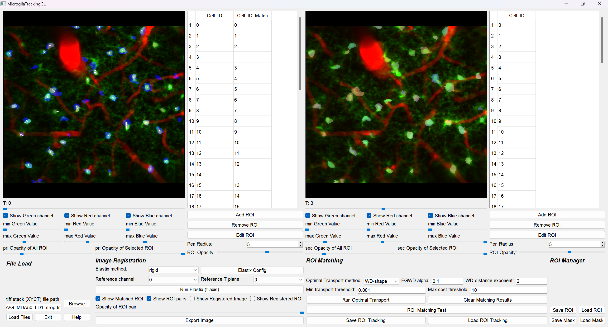
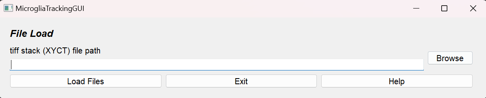
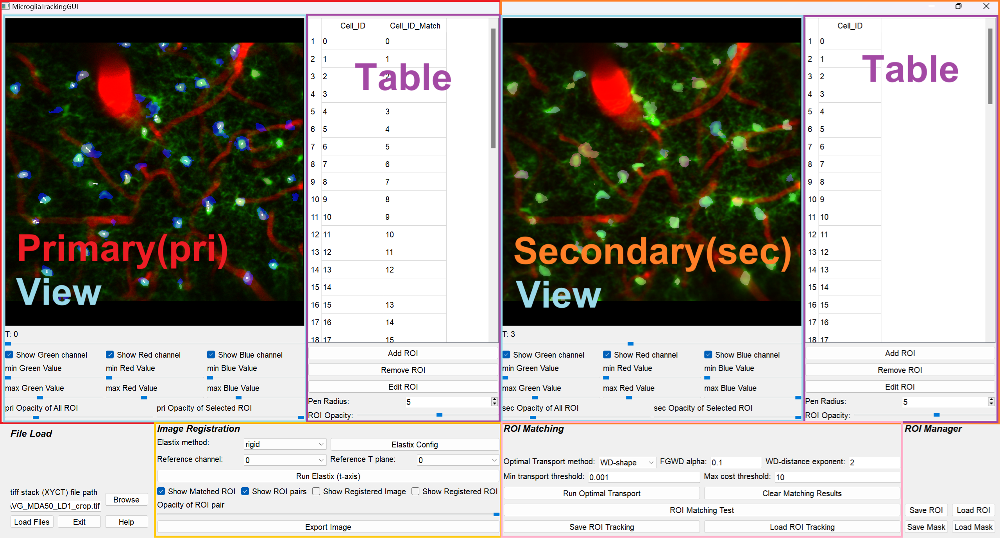
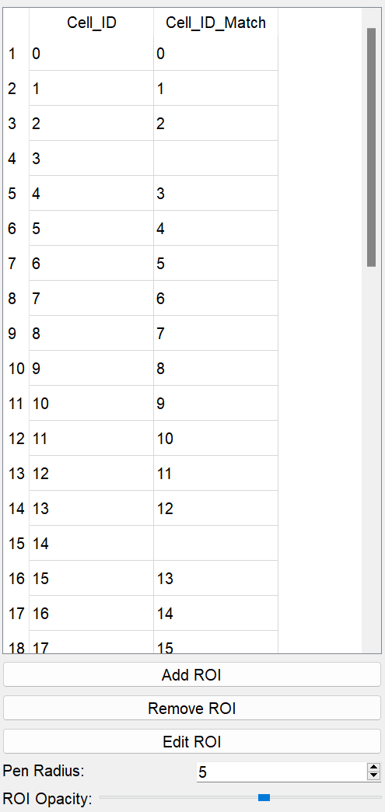

MicrogliaTracking Tutorial
Microglia Tracking is a specialized tool developed for detecting microglial ROIs from XYCT image stacks and analyzing their dynamics through time-series tracking. This tool implements Cellpose for high-precision ROI detection and offers seamless integration with ImageJ, enabling comprehensive downstream analyses of microglial dynamics.
Workflow
Load Microglia XYCT stack tif file
Image registration (see image-registration)
Draw ROIs, Extract ROIs with Cellpose (see view-section)
Auto ROI tracking (see automatic-roi-matching)
Check ROI tracking manually
Save MicrogliaTracking.mat file
Input
The input tif stack file format should be XYCT, and the number of channels must be less than 3. If you have an XYZCT tif stack, please convert it to XYCT with z-axis projection.
(Required): XYCT tif stack
Output
The result of ROI tracking is exported as MicrogliaTracking~.mat:
MicrogliaTracking_{name_of_the_tif_file}.mat
Load Fall.mat file
tiff stack (XYCT) file path (Required):
Push the “browse” button and choose the microglia tif file. The file must contain 2 or more frames.
Application Interface
MicrogliaTracking consists of two major sections, primary (pri) and secondary (sec), each containing two sub-sections: View and Table. The primary and secondary sections have different functionalities and display distinct content.
View Section
View
Displays ROIs from the table with the selected ROI highlighted. If Match_Cell_ID is filled, a white line is drawn between the primary Cell_ID ROI and the secondary Match_Cell_ID ROI. The opacity of the white line can be adjusted with the Opacity of ROI pair slider.
Key operations:
Left mouse click: Choose the closest ROI.
Right mouse click (only in pri view): Choose the closest ROI from the secondary view.
Ctrl + mouse wheel: Zoom in/out.
Middle mouse drag: Pan.
R: Reset view zoom.
T slider: Switch time point (the primary time point is always earlier than the secondary).
Image Contrast:
Green: Background image contrast of primary channel (e.g. microglia).
Red: Background image contrast of secondary channel (e.g. vessel).
Blue: Secondary ROIs.
ROI Opacity: Adjust the opacity of all and the selected ROI via sliders.
ROI edit mode
ROIs can be added, removed, and edited.
Add ROI: Draw a new ROI with mouse drag and register it by pressing the space key.
Remove ROI: Remove the selected ROI.
Edit ROI: Edit the selected ROI.
Pen Radius: Adjust the pen size.
ROI Opacity: Adjust the opacity of the ROI being edited.
Key operations:
Left mouse drag: Draw ROI.
Right mouse drag: Erase ROI.
Space key: Exit ROI edit mode.
Automatic ROI Extraction with Cellpose
Automatic ROI Extraction with Cellpose: - Placeholder: “c” - (No image provided)
Table Section
Cell_ID: - The table is initially empty when the TIFF stack is loaded. - Cell_IDs are added either by manually drawing ROIs using “Add ROI” or by loading the seg.npy file generated by Cellpose. - ROIs are stored for each time plane, and the table content updates accordingly when the T slider is adjusted. - (No image provided)
Cell_ID_Match: - The primary table includes an additional column, Cell_ID_Match, which shows the secondary ROI ID matched to the primary ROI. - Initially blank; when a number is filled, a white line is drawn in the View indicating the match. - The number must be an integer between 0 and the maximum ROI number in the secondary data. - When an ROI is removed using “Remove ROI”, its corresponding Cell_ID_Match is also removed.
One-to-one ROI matching: - Matching should be one-to-one. - Avoid one primary ROI matching multiple secondary ROIs, or vice versa.
Image Registration
Image Registration: - Supports manual ROI matching. - Due to image drifting noise, ROI matching can be challenging. - This section uses ITKElastix to register the secondary (moving) image to the primary (fixed) image based on the background image. - The resulting transformation is applied to the ROIs, enabling efficient overlay of primary and secondary ROIs. - The application supports three types of image transformation: Rigid, Affine, and B-Spline.
Performance Comparison:
First, set the Elastix method and then the reference channel (if the stack is from single-channel imaging, leave it as is).
The Elastix configuration can be customized using Elastix Config.
Click Run Elastix and wait until registration is complete. You can monitor progress on the Anaconda Prompt.
Elastix Image Registration Config Window:
Automatic ROI Matching
Automatic ROI Matching: - Automatic ROI matching is available to reduce manual effort. - Often, the number of ROI pairs exceeds 100, making manual matching time-consuming. - Combining automatic matching with manual corrections yields highly efficient and accurate ROI tracking. - Typical workflow:
Perform ROI classification with Suite2pROICheck.
Apply automatic ROI matching for specific cell types.
Manually adjust matches to ensure accuracy.
Utilize image registration support when necessary.
Parameters for Optimal Transport: - Loss: Options include WD (Wasserstein Distance)-shape, WD-distance, GWD (Gromov-Wasserstein Distance), and
FGWD (Fused Gromov-Wasserstein Distance). The WD-distance exponent controls distance weighting (higher values discourage long-distance matching), and the FGWD alpha parameter balances ROI shape similarity with distance penalty.
Pruning ROI Matching: A two-step process: 1. Minimum transport value pruning: Eliminates ROI pairs with a transport value below a threshold (“Min transport threshold”). 2. Maximum transport cost pruning: If the transport cost exceeds a threshold (“Max cost threshold”), the primary ROI is considered unmatched.
ROI Matching Test Window: - Provides a visual preview of optimal transport patterns between primary and secondary ROIs. - Red dots: Centers of primary ROIs. - Blue dots: Centers of secondary ROIs. - Green lines: Indicate ROI matching between primary and secondary. - The transport plan is represented as a (source samples) × (destination samples) matrix; the initial matching is multi-to-multi. Users can enable the “Plot Transport Plan” option to view the complete matrix before pruning.
Save/Load ROI Tracking Result: - The ROI matching results are saved as ROITracking.mat files, each containing tracking data between two imaging sessions. - For tracking across three or more sessions, create separate ROITracking files for each session pair. - For downstream analysis using these tracking results, please refer to the provided Jupyter notebooks.
ROI Matching Test Window:
ROI Manager
ROI Manager:
- Save/Load ROI: Save or load ROI data.
- Save/Load Mask: The exported mask file from Cellpose, seg.npy, can be loaded and exported. The mask file must be generated using Zstack mode.